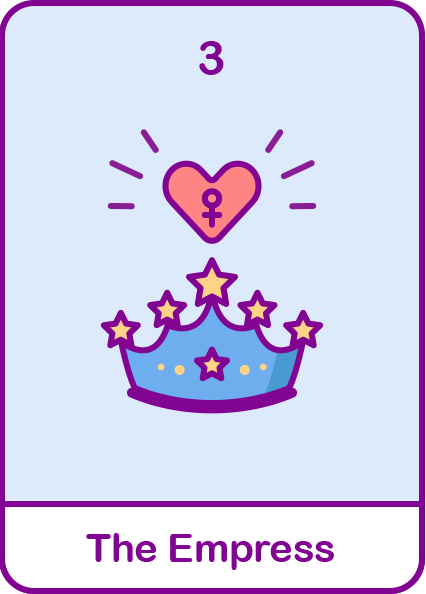

여왕
내면이 강하고 감정적으로 잘 보담아 줍니다.
적극적으로 앞에서 나서기보다 뒤에서 잘 서포트해줘요.

#외유내강
#배려심
#포근함
현대해상
내 성격 타로카드 해석은?
정방향 해석
- 조용하고 상낭하며 차분한 성격으로 남을 챙겨주는걸 좋아해 상대방이 편안함을 느껴요.
- 배려심이 깊고 섬세하며 꼼곰한 일처리로 일기나 메모를 좋아합니다.
- 다른 사람의 감정을 잘 파악하고 공감을 잘해주는 상냥한 사람입니다.
- 계획세우는 것을 좋아하고 계획대로 해야 마음이 편해요.
역방향 해석
- 관심받는 건 좋지만 또 싫어서 너무 시선이 집중 되면 부담스러워요.
- 남들을 잘 챙겨주지만 그만큼 스트레스를 받고 속으로 계속 쌓아둬요.
- 갈등상황은 되도록이면 피하려고 하지만 만약 그런 상황이 온다면 지는 건 싫어요.
- 싫은 감정을 표현하기보다 참고 배려하는 사람이라 스스로를 잘 챙겨주지못해요.
재미로 보는
내 타로카드의 재물운은?
금전운이 조금씩 좋아지고 있는 상황! 보너스나 투자한 이익이 발생할지도?
지금은 재테크나 투자하기 좋은 시기입니다!
지금까지 잘 해왔던 것처럼 책임감있는 선택과 유흥, 필요하지 않는 소비에 빠지지 않는다면 점점 더 안정적이게 될 것 같아요!
지금은 재테크나 투자하기 좋은 시기입니다!
지금까지 잘 해왔던 것처럼 책임감있는 선택과 유흥, 필요하지 않는 소비에 빠지지 않는다면 점점 더 안정적이게 될 것 같아요!
보험 컨디션도 체크해보기! 가입한 보험을 확인하고
부족한 부분을 채워 보세요 현대해상